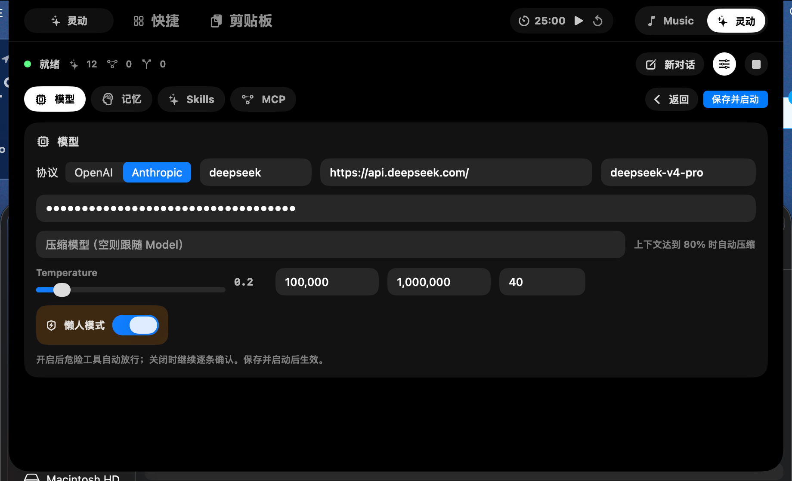
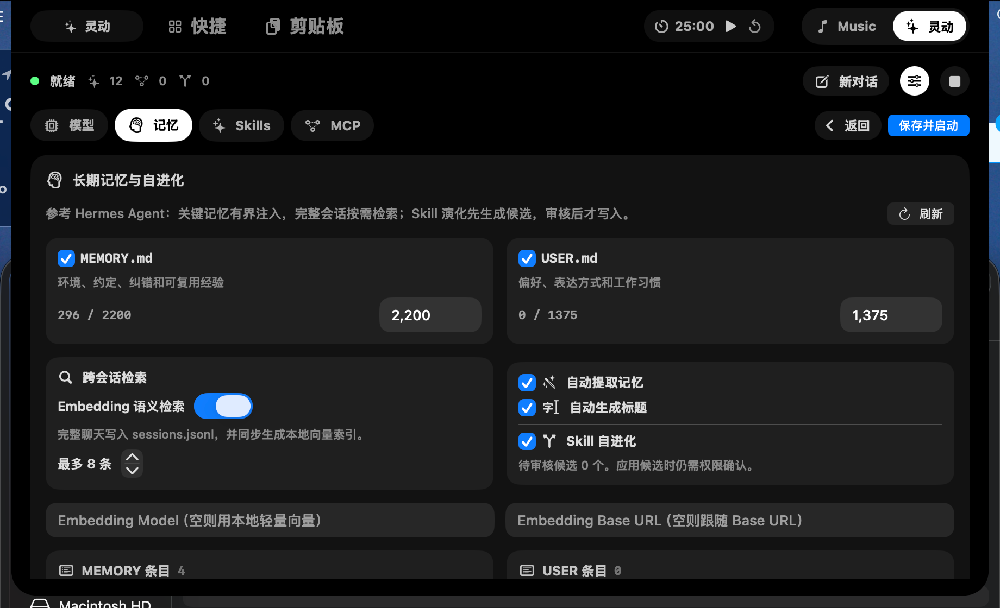
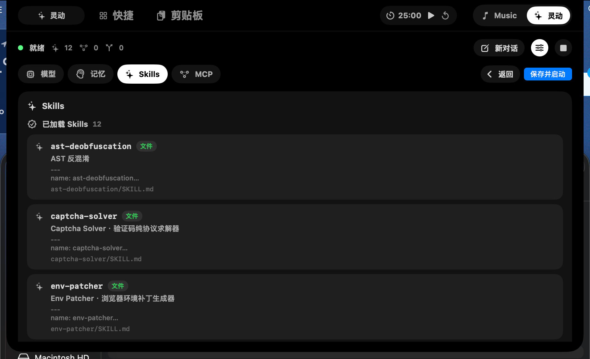
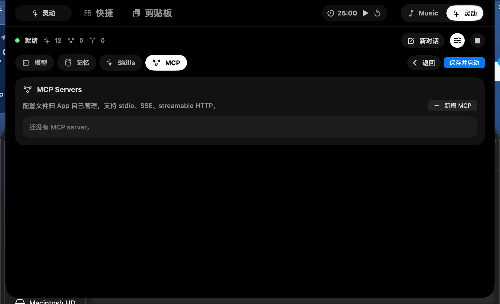

核心卖点
让 AI 能力，住进 MacBook 刘海。
自定义模型
自由更换更高级的模型，把 OpenAI、Anthropic、DeepSeek 等能力收进同一个顶栏入口。
长期记忆
让你的 AI 记住偏好、习惯和上下文，越用越懂你。
Skills
Skills 系统让你的 AI 能力更强
MCP
连接本地 App、远程服务和 streamable HTTP，让 AI 能力继续扩展。




自定义模型
自由更换更高级的模型，把 OpenAI、Anthropic、DeepSeek 等能力收进同一个顶栏入口。
长期记忆
让你的 AI 记住偏好、习惯和上下文，越用越懂你。
Skills
Skills 系统让你的 AI 能力更强
MCP
连接本地 App、远程服务和 streamable HTTP，让 AI 能力继续扩展。